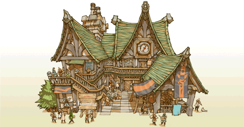

23
|
Tipos de edificio |
 |
Esta es una lista de las estructuras que puedes construir en tu reino.
● Houses (Casas)  Small House (Casa pequeña): una casa para dos. Necesita una cantidad mínima de elementite. Está bien para fomentar los ingresos iniciales del reino. Atrae a un aspirante a aventurero.
Small House (Casa pequeña): una casa para dos. Necesita una cantidad mínima de elementite. Está bien para fomentar los ingresos iniciales del reino. Atrae a un aspirante a aventurero.Spacious House (Casa espaciosa): necesita grandes cantidades de elementite, pero el incremento de los ingresos gracias a las grandes familias que atrae compensa el coste. También atraen a un aspirante a aventurero. |
● Citizen Shops (Tiendas de ciudadanos)
Bakery (Panadería): la principal fuente de alimento de los ciudadanos. Los ciudadanos que compran aquí vuelven a casa felices. Emporium (Almacenes): son el centro comercial del reino; los ciudadanos compran aquí artículos exóticos. Los objetos extranjeros de importación inspiran a las demás tiendas y a todo el territorio.  |
● Adventurer Shops (Tiendas de aventureros) |

● Adventurer Buildings (Edificios de aventureros)
 White Mage Temple (Templo de magia blanca): da acceso a los magos blancos y a los hechizos de magia blanca. Financia su investigación para acceder a hechizos más poderosos.
White Mage Temple (Templo de magia blanca): da acceso a los magos blancos y a los hechizos de magia blanca. Financia su investigación para acceder a hechizos más poderosos.Black Mage Academy (Academia de magia negra): da acceso a los magos negros y a los hechizos de magia negra. Financia su investigación para acceder a hechizos más poderosos. Training Hall (Sala de entrenamiento): da acceso a las capacidades del guerrero y a EXP adicional mediante el entrenamiento. Gaming Hall (Sala de juego): da acceso a los ladrones y a las capacidades del ladrón. Los demás aventureros también visitan este edificio para relajarse y ganar algunos guiles. |
● Special Buildings (Edificios especiales)
 Guild Hall (Sala del gremio): edificio administrativo central para los asuntos de los aventureros. Puedes aumentar el número de aventureros que puedes reclutar y también su paga. Tavern (Taberna): permite que los aventureros formen grupos para enfrentarse a mazmorras difíciles. Aquí también puedes formar tus propios grupos. Inn (Posada): permite que aventureros y comerciantes viajeros visiten el reino. |
● Parks (Parques)
 Fountain Park (Parque con fuente): la vegetación refresca el alma de ciudadanos y aventureros por igual.
Fountain Park (Parque con fuente): la vegetación refresca el alma de ciudadanos y aventureros por igual.Bulletin Park (Parque de anuncios): añade un tablón de anuncios al territorio y te permite publicar varias órdenes. |
 |
 |
 |